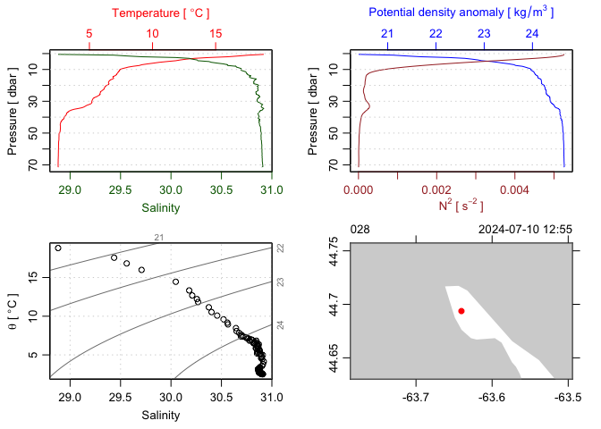
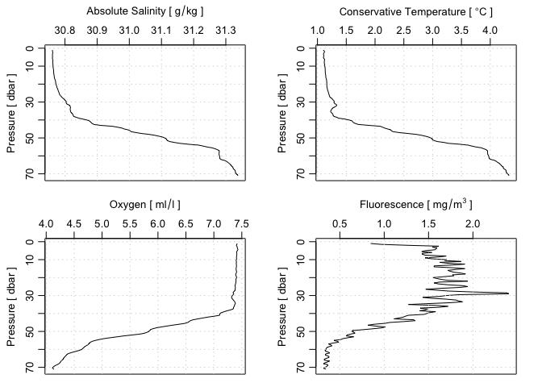

The goal of dod is to make it easier to download various types of oceanographic data from common sources such as BATS, NOAA, MEDS, BBMP. Some similar functions exist in the oce package, but the intention is to retire them as dod matures, because building oce is difficult for some users, and CRAN policies dictate against frequent updates.
Installation
You can install the development version of dod from GitHub with:
# install.packages("devtools")
devtools::install_github("dankelley/dod")Example
The following example shows how to (1) download an index of CTD data files resulting from observations made as part of the BBMP program in the present year and then (2) use functions in the oce package to read and plot the last CTD profile in the dataset.
library(dod)
year <- format(Sys.Date(), "%Y")
indexFile <- dod.ctd("BBMP", index = TRUE)
index <- read.csv(indexFile, skip = 2)
# 1. Discover column names
names(index)
#> [1] "FILE" "START_DATE_TIME"
# 2. Download CTD file
file <- dod.ctd("BBMP", ID = tail(index, 1)$FILE)
library(oce)
#> Loading required package: gsw
d <- read.ctd(file)
# 3. Standard CTD plot
plot(d)
# 4. Check also biochemistry variables
par(mfrow = c(2, 2))
plotProfile(d, "SA")
plotProfile(d, "CT")
plotProfile(d, "oxygen")
plotProfile(d, "fluorescence")
PS. This README.md file was created on 2024-07-25 by rendering the README.Rmd file with devtools::build_readme().